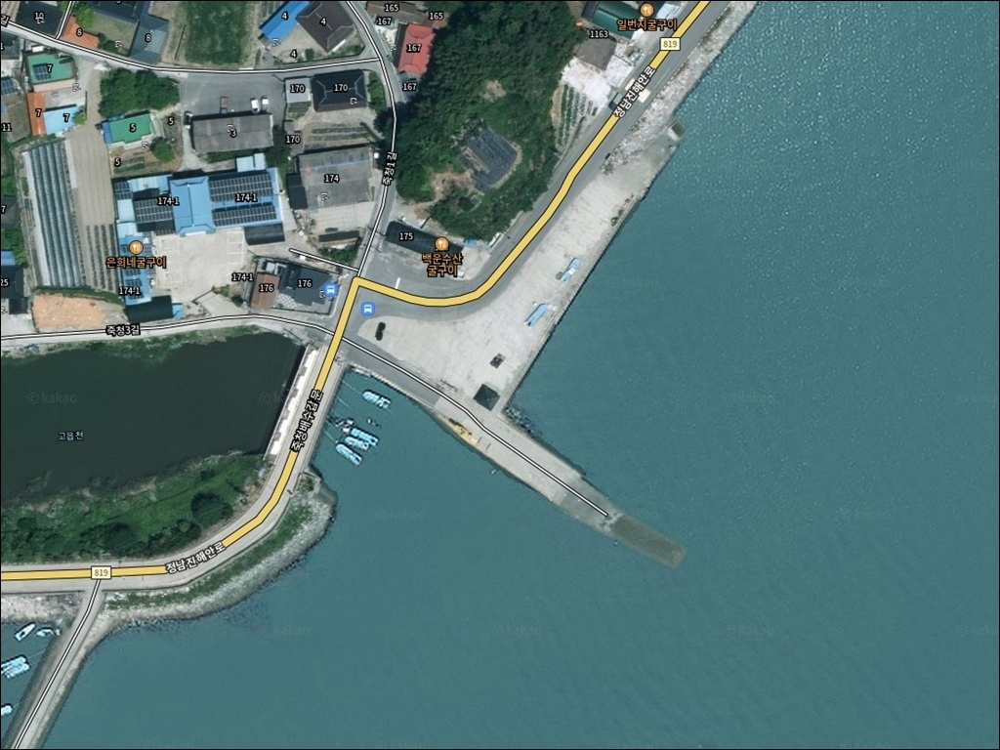
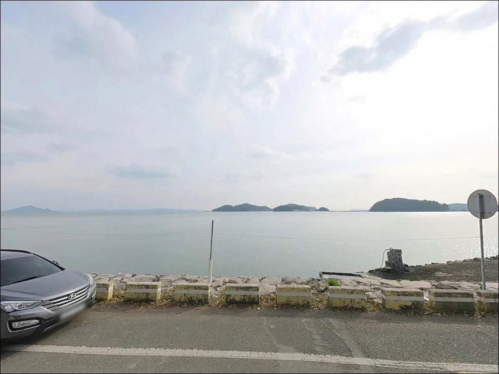
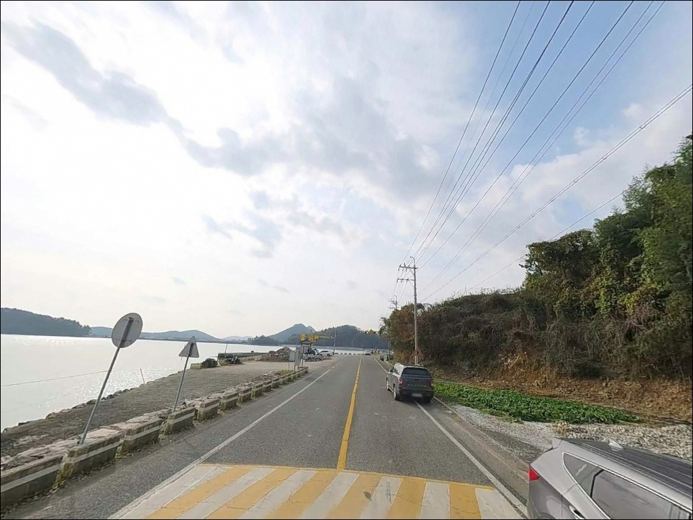
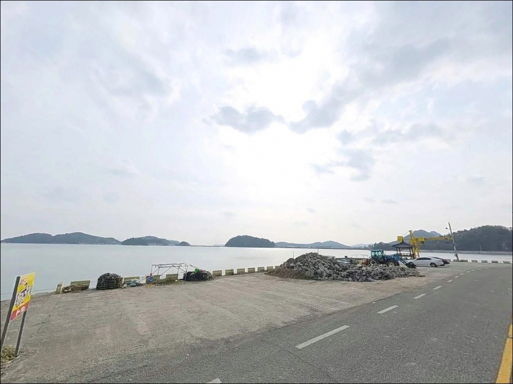
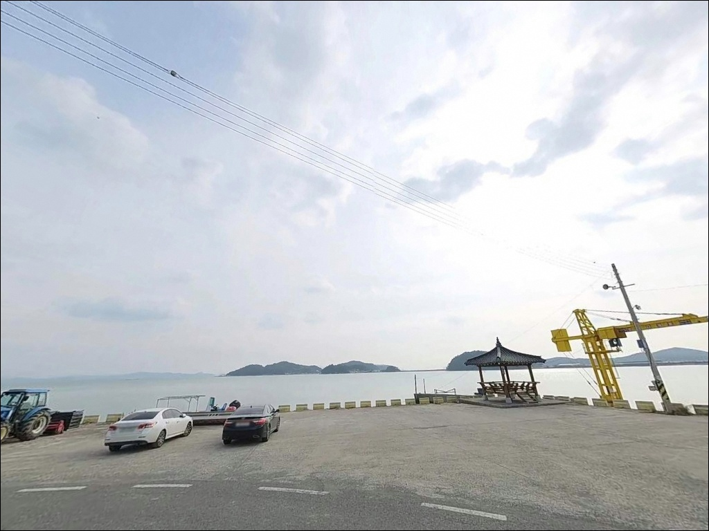
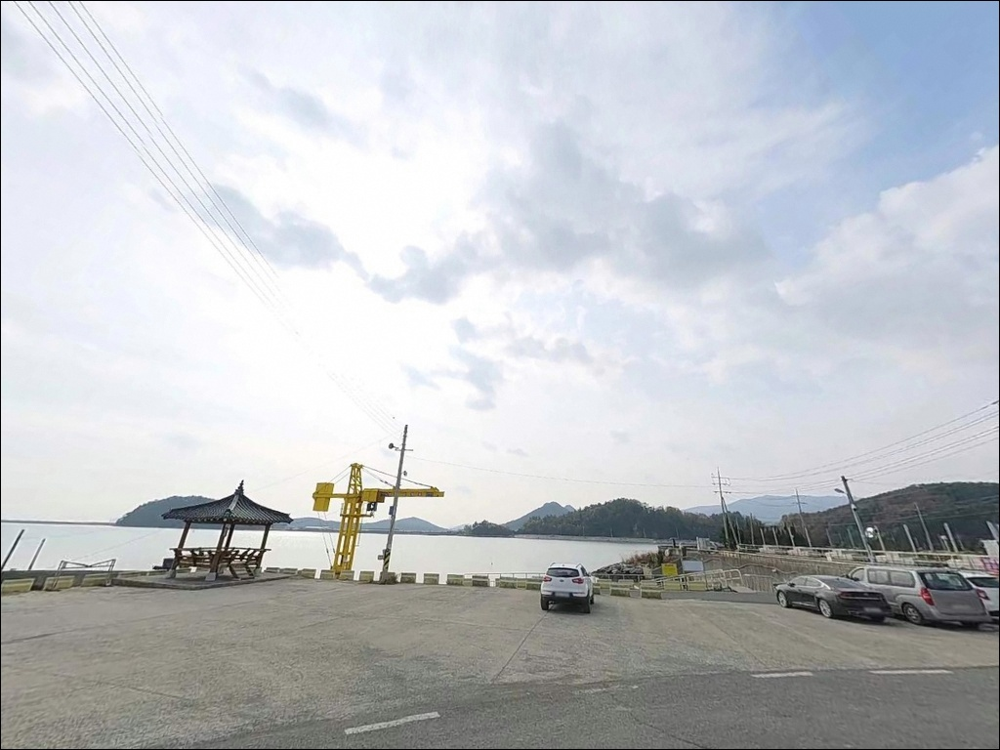
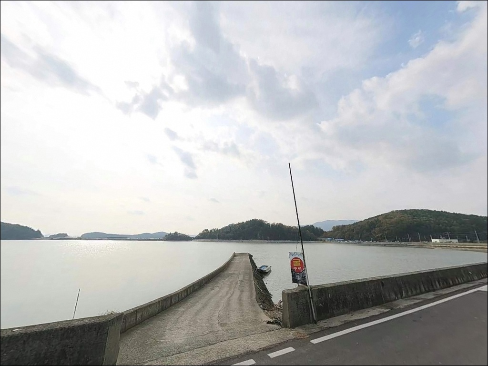
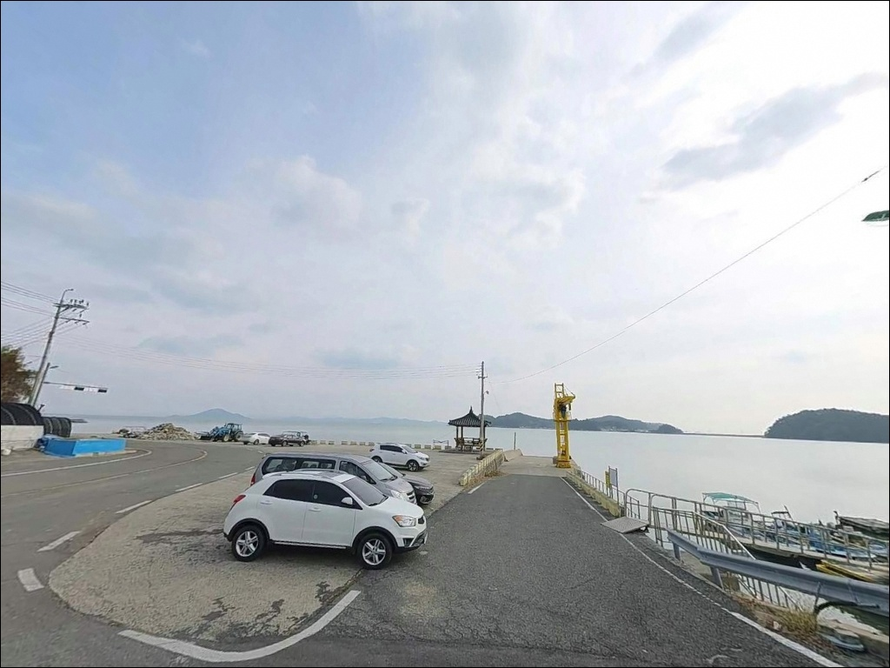
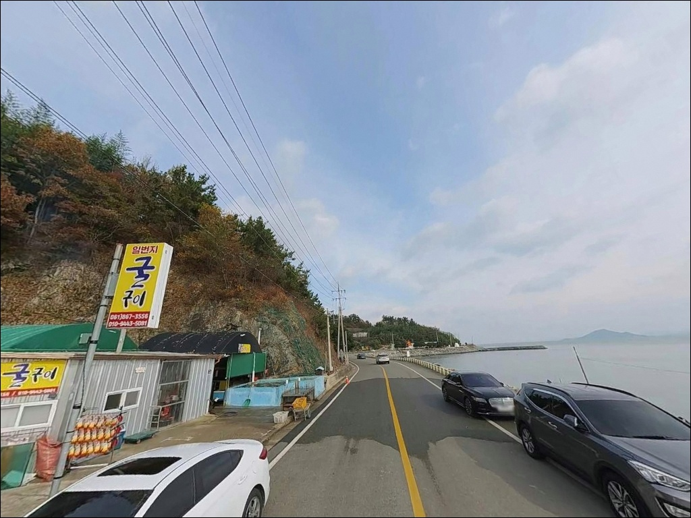

이 페이지에는 광고(제휴 링크 포함)가 있으며, 광고 링크를 통해 구매하면 운영자가 판매 수익 또는 수수료를 받을 수 있습니다. 포인트 사진: 카카오맵 스카이뷰·로드뷰. 이 페이지의 지도·사진 이미지는 카카오맵의 실제 서비스 이미지와 다를 수 있습니다.

죽청선착장
전남 장흥군 관산읍 죽청리 467-5
간조 타이밍에 맞춰 진입하면
선착장 전면 수심이 크게 낮아져
원투 채비를 던질 자리 자체가 줄어드는 포인트입니다.
이 포인트는 물때 계산 없이 진입했을 때
가장 손해가 큰 유형의 내만 선착장이며,
중들물 이후 타이밍을 잡는 것이
방문 성패를 가르는 핵심 조건입니다.
죽청선착장은 강진만 동안 내측 수역에 위치한
배수갑문 연계 소형 선착장입니다.
외해 파도의 직접 영향을 받지 않는
내만성 수역으로, 조류가 완만하고
발판 여건이 안정적인 편이라
낚시 경험이 많지 않은 분도
가볍게 접근해볼 수 있는 구조입니다.
이 글은 죽청선착장의
진입 동선, 차박 여건, 물때 판단 기준,
낚시 방식별 공략 조건에 집중합니다.
조황 단정이나 어획량 보장은
이 글의 범위에 포함되지 않습니다.

죽청선착장까지의 진입은
관산읍 읍내에서 해안 방향 지방도를 경유하는 방식입니다.
도로 자체는 포장되어 있어
비포장 구간이나 비탈길 부담은 크지 않지만,
죽청리 마을 내부로 들어서면
1차선 수준의 농로형 도로가 이어지는 구간이
있어 교행 시 주의가 필요합니다.
소형~중형 승용차 기준으로는
선착장 앞 공터까지 진입이 가능한 구조입니다.
배수장 주변 도로변에 차량을 돌릴 수 있는
공간이 확보되어 있어
초행이라도 회차 자체가 어렵지는 않습니다.
다만 대형 SUV나 캠핑 장비를 실은 차량이라면
출발 전 위성지도로 진입로 폭을 먼저 확인하는 것이
안전한 선택입니다.
주차는 선착장 입구 공터와
배수장 인근 도로변 공간을 활용하는 방식이 일반적입니다.
이른 아침 어업 활동 시간대에는
어업인 차량이 우선이므로,
어선 통행 동선을 막지 않는 자리를 먼저 잡는 것이
기본 매너입니다.

죽청리는 민가와 농경지가 혼재한
소규모 어촌 마을 구조입니다.
야간 차량 통행은 거의 없는 편이며,
남파랑길 79코스가 이 구간을 통과해
낮 시간에는 보행자 유입이 있을 수 있습니다.
야간은 비교적 조용한 환경이지만
민가와 가까운 위치라 소음에 주의하는 것이
기본 매너입니다.
선착장 인근 가로등은 제한적입니다.
배수장·배수갑문 시설 주변에
관리 목적의 조명이 일부 있지만,
낚시 자리나 차 주변을 밝히기에는 부족한 수준입니다.
개인 헤드랜턴과 보조 조명은 필수이며,
발판이 이끼로 미끄러울 수 있으니
접지력 좋은 신발도 챙기는 편이 좋습니다.
선착장 앞 공간이 넓지 않아
장박형 차박보다는 낚시 후 단기 대기 형태로
활용하는 것이 현실적입니다.
조용한 내만 분위기를 선호하는 분이라면
하룻밤 머무는 경험으로는
나쁘지 않은 포인트입니다.

죽청선착장 반경 1km 이내에는
편의점이나 낚시용품점을 기대하기 어렵습니다.
죽청리 자체가 소규모 어촌 마을 단위라
생활 인프라는 사실상 없는 구조입니다.
출발 전 관산읍 읍내에서 미끼와 식수, 식료품을
모두 조달하고 진입하는 것이
현실적인 준비 방식입니다.
관산읍 읍내까지는 차량으로 약 7분 거리입니다.
편의점과 주유소, 식당이 읍 소재지에 집중되어 있으며,
낚시용품점도 관산읍 내에 위치합니다.
갯지렁이나 조갯살 등 생미끼는
읍내에서 조달한 뒤 현장으로 이동하는 동선이
가장 효율적입니다.
응급 상황 발생 시 관산읍 보건지소가
반경 내 위치하며, 장흥읍 병원까지는
차량으로 약 20분 거리입니다.
연료와 비상약품, 식수는 충분히 준비하고
진입하는 것이 안전합니다.

죽청선착장에서 가장 먼저 확인할 것은
물때입니다.
내만형 선착장 특성상 간조 시 수심이 크게 줄어들어
원투 채비를 운용하기 어려운 구간이 발생합니다.
바다타임에서 관산읍 죽청리 기준 물때를 확인하고
중들물~만조 전후 타이밍에 맞춰
출발 시각을 계산하는 것이 기본 전략입니다.
배수갑문 연계 선착장이라는 구조도 판단 변수입니다.
배수 시간대와 조석이 겹치면
선착장 근방의 조류 흐름이 변화합니다.
배수 전후 타이밍에 합수부 경계선을 따라
루어 채비를 흘려주는 방식이
이 지형에서 유효한 접근입니다.
마을 선착장이라 어선 통행이 있는 공간입니다.
어업인 조업 시간대에는
선착장 공간을 양보하는 것이 기본 매너이며,
채비 손실에 대비해 여분 채비를
넉넉하게 준비하는 편이 좋습니다.
구명조끼와 헤드랜턴은 야간 출조 시 필수입니다.

죽청선착장의 핵심은 배수갑문과 연계된
내만형 수역 구조입니다.
선착장 전면은 모래와 뻘이 혼합된 바닥 구조로,
외해 수역과 비교하면 밑걸림이 적은 편입니다.
선착장 끝단과 수로 합수부 구간이
수심 변화가 가장 뚜렷한 핵심 자리로 작동하며,
이 구간을 집중 탐색하는 것이 효율적입니다.
조류는 강진만 조석에 연동되며,
외해 직결 조류보다는 배수량과 조석에 따른
국지적 흐름 변화가 중요합니다.
배수갑문 개방 전후와 물돌이 전후 시간대에
흐름이 달라지므로,
입장 전 물때표를 먼저 확인하고
흐름이 살아나는 타이밍을 겨냥해야 합니다.
배수갑문 인근 선착장은
배수 시간대와 조석 타이밍이 겹치는 구간에서
조류 변화가 집중됩니다.
이 포인트를 처음 방문하는 분이라면
출조 전 관산읍 일대 조황 검색을 먼저 해보는 편이
현장 판단에 도움이 됩니다.

이 포인트에서 가장 안정적인 방식은 원투낚시입니다.
선착장 끝단에서 외항 방향으로 캐스팅하면
모래·뻘 혼합 저질 구간을 노릴 수 있습니다.
돌가자미, 보구치, 붕장어 계열이
이 지형에서 기대해볼 수 있는 어종이며,
만조 전후 2시간 구간이 가장 유리한 타이밍입니다.
라이트 루어낚시도 이 포인트 구조에 맞습니다.
수로 라인과 선착장 끝단 주변 석축 구간을
소형 지그헤드 채비로 탐색하면
볼락류와 망둥이류를 노릴 수 있습니다.
배수 시간대에는 합수부 경계선을 따라
흘려주는 방식이 효과적인 패턴입니다.
찌낚시는 만조 전후 선착장 벽면을 따라
흐름이 형성되는 구간에서 유효합니다.
내만형 수역 특성상 잡어류 위주의 조황이
나타나기 쉬운 구조이며,
숭어나 망상어를 대상으로
릴찌낚시를 가볍게 운용하는 방식이
이 포인트 지형과 잘 맞습니다.

죽청선착장 주차 여건이 여의치 않거나
조류가 기대에 미치지 못할 때는
같은 관산읍 해안선에 위치한
수문항 방파제가 첫 번째 대안입니다.
죽청선착장에서 차량으로 10분 내외 거리이며,
방파제 구조가 갖춰져 있어
원투·루어·찌낚시 모두 대응 가능합니다.
좀 더 먼 거리를 이동할 수 있다면
장흥군 회진면의 회진항 방파제도
대안이 됩니다.
방파제 길이가 길고 외해 방향 조류 영향이 크며,
에깅과 루어 방식에서
죽청선착장보다 다양한 어종 대응이
가능한 포인트입니다.
편의시설이 갖춰진 낚시 공간을 원한다면
장흥군 회진면의 정남진해양낚시공원이 있습니다.
유료 시설이지만 안전 시설이 갖춰져 있으며,
죽청선착장에서 차량으로 약 15~20분 거리입니다.
가족 단위 방문이나
처음 낚시를 접하는 분께 적합한 대안입니다.

원투낚시를 주력으로 하는 낚시인이라면
죽청선착장의 내만 지형 조건은
잘 맞는 구조입니다.
밑걸림이 적은 모래·뻘 혼합 바닥과
배수갑문 연계 수로 흐름이
다양한 낚시 방식을 가볍게 시험해보기
좋은 환경을 만들어줍니다.
반면 물때 계산 없이 간조 타이밍에 도착하거나,
대형 차량으로 진입로를 사전 확인하지 않고
찾아가면 낚시 자리 자체를 잡기 어려운
상황을 맞닥뜨릴 수 있습니다.
물때 확인, 자급 준비, 진입로 점검
이 세 가지를 갖추고 가면
조용히 낚시에 집중할 수 있는 포인트입니다.
번잡하지 않은 관산읍 소형 선착장에서
물때를 맞춰 낚시 한 타임 즐기고
차 안에서 하룻밤 대기하는 방식이라면,
죽청선착장은 낚시와 차박을
조용히 엮기 좋은 출조지가 됩니다.